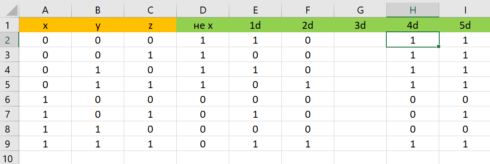

Задание №1
| Логическая функция F задаётся выражением: (¬x ∧ y ∧ z) ∨ (¬x ∧ ¬y ∧ z) ∨ (¬x ∧ ¬y ∧ ¬z). На рисунке приведён фрагмент таблицы истинности функции F, содержащий все наборы аргументов, при которых функция F истинна. Определите, какому столбцу таблицы истинности функции F соответствует каждая из переменных x, y, z. В ответе напишите буквы x, y, z в том порядке, в котором идут соответствующие им столбцы (сначала – буква, соответствующая первому столбцу, затем – буква, соответствующая второму столбцу, и т. д.) Буквы в ответе пишите подряд, никаких разделителей между буквами ставить не нужно. |
Решение:
- Для начала нужно расставить действия по порядку
- Затем открываем Excel и перечерчиваем себе подобную таблицу
- Далее ее нужно заполнить подобным образом
- Чтобы найти инверсию, нужно ввести подобную команду
Таким образом мы можем заполнить сразу 6 действий, а если объединим их, то можно уложиться всего лишь в 3
- Чтобы найти конъюнкцию, нужно ввести подобную команду
Таким же образом мы можем заполнить еще 5 действий, конечные действия лучше выделить другим цветом
- Чтобы найти дизъюнкцию, нужно ввести подобную команду
Это конечное действие, то есть оно и равно тем значениям F, которые можно увидеть в таблице из задания. Для удобства лучше выделить подходящие нам строки
Также можно вынести нужную нам таблицу отдельно
- Теперь нужно просто сопоставить обе таблицы и найти ответ
Ответ:zxy
Задание №2
| Логическая функция F задаётся выражением (x ≡ z ) ∨ (x → (y ∧ z)). Дан частично заполненный фрагмент, содержащий неповторяющиеся строки таблицы истинности функции F. Определите, какому столбцу таблицы истинности соответствует каждая из переменных x, y, z.В ответе напишите буквы x, y, z в том порядке, в котором идут соответствующие им столбцы (сначала — буква, соответствующая первому столбцу; затем — буква, соответствующая второму столбцу, и т. д.). Буквы в ответе пишите подряд, никаких разделителей между буквами ставить не нужно. |
Решение:
- Для начала нужно упростить логическое выражение
- Затем нужно расставить действия по порядку
- Далее открываем Excel, перечерчиваем себе подобную таблицу и заполняем все возможные значения переменных
- Заполняем инверсию
- Заполняем эквиваленцию
- Заполняем конъюнкцию
- Заполняем оставшиеся дизъюнкции

Теперь можно выделить нужные нам строчки, где F=0
- Выделим нужную нам таблицу
- Первая переменная это точно y. Вторая переменная, по логике, это z, т.к. у икса две единицы и не может быть нулей. Ну а 3 переменная это оставшийся х, записываем ответ
Ответ:yzx
Назад |